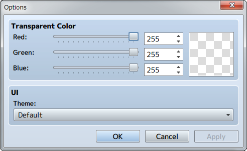

Menu Bar Contents
[File] Menu
- Open MV Project
- Opens the MV [Game.rpgproject] file.
- Export All
- Select the folder to export the Window Frame as an image and JSON file set to.
- Close Window Builder
- Closes the application. Unsaved work will be lost.
[Tools] Menu
- Options
-
Change background color and application looks.

[Help] Menu
- Contents
- Displays Help. *Opens in a browser.
- Version
- The version of this software will be displayed.